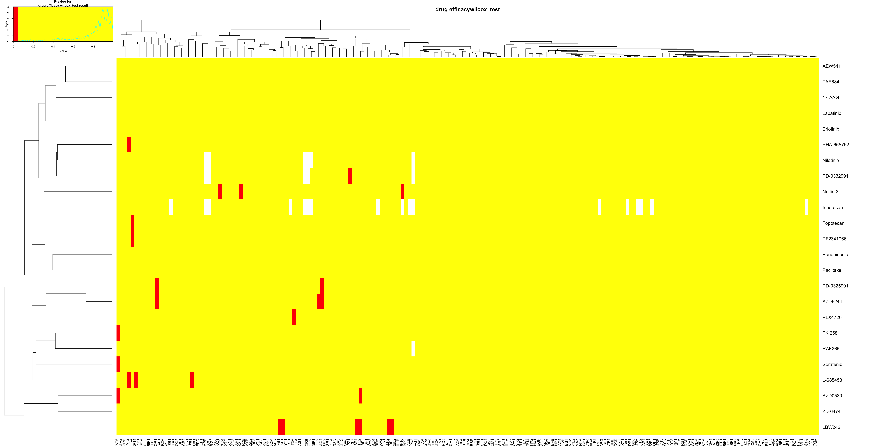

Last updated: 2018-08-20
workflowr checks: (Click a bullet for more information) ✔ R Markdown file: up-to-date
Great! Since the R Markdown file has been committed to the Git repository, you know the exact version of the code that produced these results.
✔ Environment: empty
Great job! The global environment was empty. Objects defined in the global environment can affect the analysis in your R Markdown file in unknown ways. For reproduciblity it’s best to always run the code in an empty environment.
✔ Seed:
set.seed(20180723)
The command set.seed(20180723) was run prior to running the code in the R Markdown file. Setting a seed ensures that any results that rely on randomness, e.g. subsampling or permutations, are reproducible.
✔ Session information: recorded
Great job! Recording the operating system, R version, and package versions is critical for reproducibility.
✔ Repository version: 75e3caf
wflow_publish or wflow_git_commit). workflowr only checks the R Markdown file, but you know if there are other scripts or data files that it depends on. Below is the status of the Git repository when the results were generated:
Ignored files:
Ignored: .DS_Store
Ignored: .Rhistory
Ignored: .Rproj.user/
Ignored: analysis/.DS_Store
Ignored: analysis/.Rhistory
Ignored: docs/.DS_Store
Ignored: docs/figure/.DS_Store
Untracked files:
Untracked: analysis/correlation analysis.Rmd
Untracked: analysis/firstheatmap.pdf
Untracked: analysis/secondheatmap.pdf
Untracked: analysis/test.tsv
Untracked: analysis/thirdheatmap.pdf
Untracked: docs/figure/correlation analysis.Rmd/
Untracked: docs/figure/correlation_analysis.Rmd/
Untracked: docs/figure/drug.Rmd/
Untracked: docs/figure/gene_set_analysis_re.Rmd/
Untracked: docs/firstheatmap.pdf
Untracked: docs/secondheatmap.pdf
Untracked: docs/thirdheatmap.pdf
Unstaged changes:
Modified: analysis/_site.yml
Modified: analysis/gene_set_analysis.Rmd
| File | Version | Author | Date | Message |
|---|---|---|---|---|
| Rmd | 75e3caf | bingrus | 2018-08-20 | wflow_git_commit(“analysis/drugresponse.Rmd”) |

#drug.cl.efficacy.wilcox[with(drug.cl.efficacy.wilcox,drug.cl.efficacy.wilcox<0.05)]
sig.drug.pos<-which(as.matrix(drug.cl.efficacy.wilcox)<0.05, arr.ind=TRUE)
sig.drug.df<-as.data.frame(sig.drug.pos)
sig.drug.df$p.value<-drug.cl.efficacy.wilcox[which(as.matrix(drug.cl.efficacy.wilcox)<0.05, arr.ind=TRUE)]
sig.drug.df$row<-row.names(drug.cl.efficacy.wilcox)[sig.drug.df$row]
sig.drug.df$col<-colnames(drug.cl.efficacy.wilcox)[sig.drug.df$col]
colnames(sig.drug.df)<-c('drug','regulator','pvalue.adjusted')
sig.drug.df drug regulator pvalue.adjusted
AZD6244 AZD6244 ALX4 0.0155958587
PD.0325901 PD-0325901 ALX4 0.0443758893
L.685458 L-685458 CREB1 0.0036170558
PLX4720 PLX4720 DNMT3A 0.0118374686
LBW242 LBW242 ELF2 0.0006631087
AZD6244.1 AZD6244 EZH2 0.0376611135
Nutlin.3 Nutlin-3 HOXA5 0.0464308470
AZD6244.2 AZD6244 NCOR1 0.0324276549
PD.0325901.1 PD-0325901 NCOR1 0.0324276549
AZD0530 AZD0530 NFATC2 0.0471445105
LBW242.1 LBW242 NFATC2 0.0012233886
Nutlin.3.1 Nutlin-3 NKX2-1 0.0271250247
L.685458.1 L-685458 PARP14 0.0272641665
LBW242.2 LBW242 RBBP4 0.0187925871
LBW242.3 LBW242 SF1 0.0007028216
PD.0332991 PD-0332991 SPZ1 0.0485812276
LBW242.4 LBW242 SREBF2 0.0150522037
L.685458.2 L-685458 STAT2 0.0305990322
PHA.665752 PHA-665752 STAT2 0.0041859958
AZD0530.1 AZD0530 STAT6 0.0391175303
Sorafenib Sorafenib STAT6 0.0114833066
TKI258 TKI258 STAT6 0.0491024175
LBW242.5 LBW242 TGFB1 0.0005534334
PF2341066 PF2341066 TLR4 0.0249264970
Topotecan Topotecan TLR4 0.0249264970
Nutlin.3.2 Nutlin-3 TNFSF10 0.0246001709#sig.drug<-list()
#drug.index<-unique(sig.drug.pos[,1])
#for(i in c(1:length(drug.index))){
# sig.drug.col<-sig.drug.pos[which(sig.drug.pos[,1] == drug.index[i]),2]
# sig.drug[[i]] <-drug.cl.efficacy.wilcox[drug.index[i],sig.drug.col]
# if(length(sig.drug[[i]]) == 1){names(sig.drug[[i]])<-colnames(drug.cl.efficacy.wilcox[sig.drug.col])}
# }
#names(sig.drug)<-row.names(drug.cl.efficacy.wilcox)[drug.index]sessionInfo()R version 3.5.0 (2018-04-23)
Platform: x86_64-apple-darwin15.6.0 (64-bit)
Running under: macOS High Sierra 10.13.4
Matrix products: default
BLAS: /Library/Frameworks/R.framework/Versions/3.5/Resources/lib/libRblas.0.dylib
LAPACK: /Library/Frameworks/R.framework/Versions/3.5/Resources/lib/libRlapack.dylib
locale:
[1] en_AU.UTF-8/en_AU.UTF-8/en_AU.UTF-8/C/en_AU.UTF-8/en_AU.UTF-8
attached base packages:
[1] stats4 parallel stats graphics grDevices utils datasets
[8] methods base
other attached packages:
[1] GSEABase_1.42.0 graph_1.58.0 annotate_1.58.0
[4] XML_3.98-1.11 AnnotationDbi_1.42.1 IRanges_2.14.10
[7] S4Vectors_0.18.3 GSVA_1.28.0 bindrcpp_0.2.2
[10] gplots_3.0.1 GEOquery_2.48.0 Biobase_2.40.0
[13] BiocGenerics_0.26.0 reshape_0.8.7
loaded via a namespace (and not attached):
[1] Rcpp_0.12.17 tidyr_0.8.1 gtools_3.8.1
[4] assertthat_0.2.0 rprojroot_1.3-2 digest_0.6.15
[7] mime_0.5 R6_2.2.2 plyr_1.8.4
[10] backports_1.1.2 RSQLite_2.1.1 evaluate_0.10.1
[13] pillar_1.2.3 rlang_0.2.1 gdata_2.18.0
[16] whisker_0.3-2 blob_1.1.1 R.utils_2.6.0
[19] R.oo_1.22.0 rmarkdown_1.10 shinythemes_1.1.1
[22] readr_1.1.1 geneplotter_1.58.0 stringr_1.3.1
[25] RCurl_1.95-4.10 bit_1.1-14 shiny_1.1.0
[28] compiler_3.5.0 httpuv_1.4.4.2 pkgconfig_2.0.1
[31] htmltools_0.3.6 tidyselect_0.2.4 tibble_1.4.2
[34] workflowr_1.1.1 dplyr_0.7.6 later_0.7.3
[37] bitops_1.0-6 R.methodsS3_1.7.1 grid_3.5.0
[40] xtable_1.8-2 DBI_1.0.0 git2r_0.22.1
[43] magrittr_1.5 KernSmooth_2.23-15 stringi_1.2.3
[46] promises_1.0.1 limma_3.36.2 xml2_1.2.0
[49] RColorBrewer_1.1-2 tools_3.5.0 bit64_0.9-7
[52] glue_1.2.0 purrr_0.2.5 hms_0.4.2
[55] yaml_2.1.19 caTools_1.17.1 memoise_1.1.0
[58] knitr_1.20 bindr_0.1.1 This reproducible R Markdown analysis was created with workflowr 1.1.1